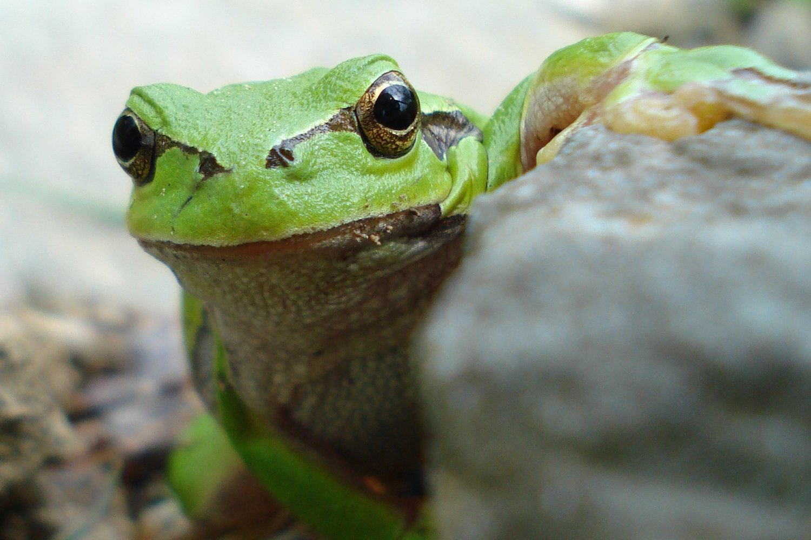
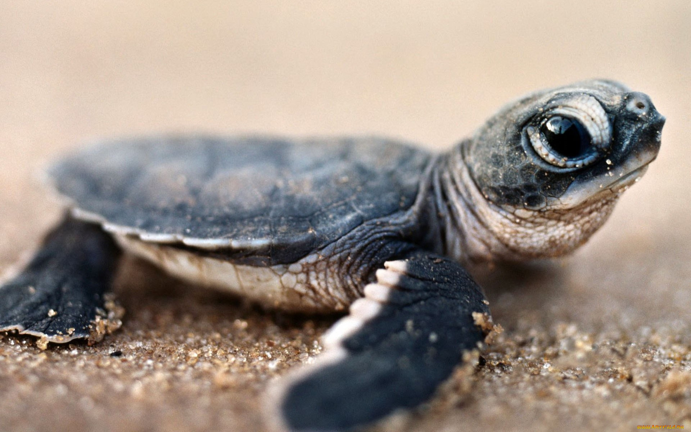
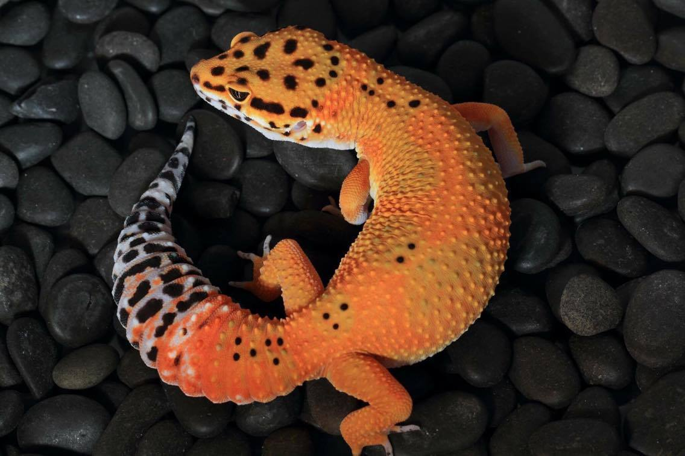

Общие сведения
Лягушечка 🐸

Лягушечка (ласк. от Лягушка) - общеупотребительное название группы животных из отряда бесхвостых земноводных. В широком смысле термин «лягушка» относится ко всем представителям отряда бесхвостых. В узком смысле это название применяется по отношению к представителям семейства настоящих лягушек. Личинки лягушек называются головастиками.
Размеры взрослых особей варьируют от 8 мм (узкорот Paedophryne amauensis) до 320 мм (лягушка-голиаф). Представители отряда имеют коренастое туловище, выступающие глаза, раздвоенный язык и согнутые под туловищем конечности; хвост отсутствует. Среда обитания лягушек на всех стадиях развития включает пресноводные водоёмы, а для взрослых особей — дополнительно сушу, кроны деревьев и подземные норы. Наиболее характерный способ передвижения лягушек представляет собой прыжки, но разные виды освоили дополнительные способы: ходьбу и бег, плавание, древолазание, планирование.
Лягушка умеет дышать как на суше, так и в воде, что делает ее земноводной самой маленькой русалкой в мире
Черепашка 🐢

Черепашка (ласк. от Черепаха, лат. Testudines) — один из четырёх современных отрядов пресмыкающихся. Содержит около 328 современных видов, группируемых в 14 семейств и два подотряда. Ископаемые остатки черепах прослеживаются на протяжении более 220 миллионов лет.
Отличительным признаком черепах является панцирь, состоящий из двух частей: карапакса и пластрона, и служащий основной защитой от враговПерейти к разделу .
Черепахи распространены в тропической и умеренной климатических зонах почти по всей Земле. Экологически их подразделяют на морских и наземных, а наземных, в свою очередь, на сухопутных и пресноводных.
Ящерка 🦎

Ящерки (ласк. от Ящерицы, лат. Lacertilia, ранее Sauria) — парафилетическая группа пресмыкающихся отряда чешуйчатых, традиционно рассматриваемая в ранге подотряда. Не является биологически чётко определяемой категорией и включает всех чешуйчатых, кроме змей и двуходок. К примеру, змеи являются потомками ящериц и генетически тесно связаны с игуанообразными и веретеницеобразными ящерицами, образуя вместе с ними общую кладу Toxicofera. В соответствии с принципами кладистической классификации ящерицы могут быть разделены на 7 самостоятельных подотрядов (основных клад): веретеницеобразные (Anguimorpha), гекконообразные (Gekkota), игуанообразные (Iguania), Dibamia, Lacertiformata, Scinciformata и Teiformata.
Согласно данным The Reptile Database, по состоянию на июнь 2021 года известно 7059 видов ящериц.